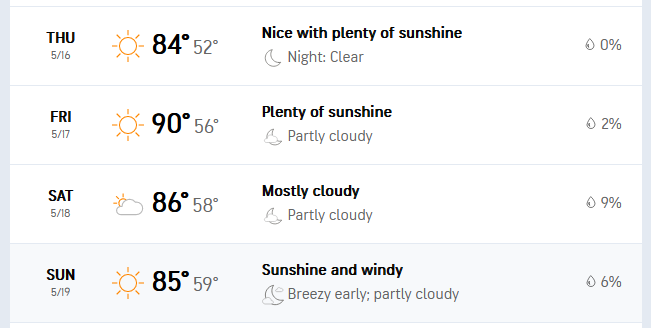

Moab Packing List
Anticipated Weather

Clothing
- Hiking Shoes
-
Secure Shoes with a back for rafting that can get wet
- Quick-Drying clothes for rafting
- Swimsuits
- Sunglasses
- Sun hat
- Anti-Radiation Gear
-
For 3-4 days:
- Underclothes
- Socks
- Shirts
- Hiking Pants
- Sleepwear
Toiletries
- Comb
- Toothbrush/Toothpaste/Floss
- Deodorant (seriously don't forget this one, lol)
- Shaving Stuff
- Glasses
- Shampoo/Conditioner
- Cologne
- Tweezers
- Nail clippers
- Lotion
- Cutips
Health
- Tylenol
- Vitamins
- Allergy Meds
- Sunscreen
- Hand Sanitizer
- Tums
- Melatonin
Electronics
- Smartphone + Charger
- Laptop + Charger
- Flashlight
- VR Headset (ya know, in case we get bored)
- Earbuds
- HDMI Cable
Misc.
- Wallet
- Keys
-
Ziplock Bags, used for:
- Hiking Snacks
- Electronics while rafting
- Water Bottle
- Blankets/Pillows
- Disinfecting Wipes
- Paper plates
- Paper utensils
- Paper bowls
- Paper towels
- Board Games
Food
I figure we'll also get food on the road at some point(s). But here are some
basics.
- Sourdough Bread
- Microwavable Ramen Cup Noodles (still need to buy)
- Tortilla Chips (for use with colby jack; still need to buy)
- Special K Cereal
For Cooler:
- Water Bottles
- Provolone cheese (still need to buy)
- Turkey sandwich meat (still need to buy)
-
Shredded Colby Jack Cheese (for use with tortilla chips; still need to
buy)
- 1/2 gal whole milk (for cereal, still need to buy)
- String Cheese
Snacks
- Meat Sticks
- Cheezits
- Doritos
- Pretzels
- Candy
- Soda
- Seltzers
- Electrolyte Drinks (still need to buy)